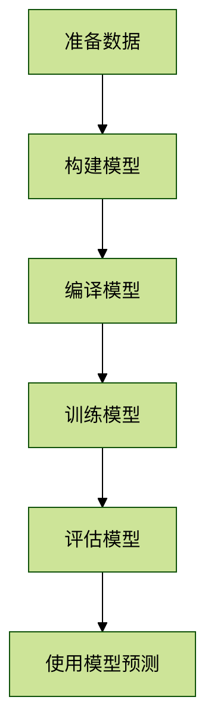

TensorFlow 実例 - 回帰問題
回帰問題とは
回帰問題は機械学習における重要な問題の一種であり、その目標は連続値の出力を予測することです。分類問題（離散的なカテゴリを予測する）とは異なり、回帰問題は実数範囲の数値を予測します。
よくある回帰問題の例
- 住宅価格予測：住宅の面積や立地などの特徴に基づいて価格を予測する
- 株価予測：過去のデータに基づいて将来の株価を予測する
- 気温予測：気象データに基づいて将来の気温を予測する
TensorFlow で回帰問題を解決する基本フロー

実践：ボストン住宅価格予測
1. データの準備
ここでは古典的なボストン住宅価格データセットを使用します。このデータセットには506個のサンプルが含まれ、各サンプルには13個の特徴量があります：
例
from tensorflow.keras.datasets import boston_housing
# データの読み込み
(train_data, train_targets), (test_data, test_targets) = boston_housing.load_data()
# データの標準化（重要なステップ）
mean = train_data.mean(axis=0)
train_data -= mean
std = train_data.std(axis=0)
train_data /= std
test_data -= mean
test_data /= std
# データの読み込み
(train_data, train_targets), (test_data, test_targets) = boston_housing.load_data()
# データの標準化（重要なステップ）
mean = train_data.mean(axis=0)
train_data -= mean
std = train_data.std(axis=0)
train_data /= std
test_data -= mean
test_data /= std
2. モデルの構築
例
from tensorflow.keras import models
from tensorflow.keras import layers
def build_model():
model = models.Sequential([
layers.Dense(64, activation='relu', input_shape=(train_data.shape[1],)),
layers.Dense(64, activation='relu'),
layers.Dense(1) # 出力層には活性化関数は不要
])
return model
from tensorflow.keras import layers
def build_model():
model = models.Sequential([
layers.Dense(64, activation='relu', input_shape=(train_data.shape[1],)),
layers.Dense(64, activation='relu'),
layers.Dense(1) # 出力層には活性化関数は不要
])
return model
モデル構造の説明
- 入力層：13個の特徴量に対応
- 2つの隠れ層：各層64個のニューロン、ReLU活性化関数を使用
- 出力層：1個のニューロン（住宅価格の予測）、活性化関数は使用しない
3. モデルのコンパイル
例
model = build_model()
model.compile(optimizer='rmsprop',
loss='mse', # 平均二乗誤差
metrics=['mae']) # 平均絶対誤差
model.compile(optimizer='rmsprop',
loss='mse', # 平均二乗誤差
metrics=['mae']) # 平均絶対誤差
主要パラメータの説明
- optimizer: オプティマイザー、学習プロセスを制御する
rmsprop: ほとんどの問題に適したデフォルトの選択肢
- loss: 損失関数、回帰問題でよく使用される
mse(Mean Squared Error): 平均二乗誤差
- metrics: 評価指標
mae(Mean Absolute Error): 平均絶対誤差
4. モデルのトレーニング
例
history = model.fit(train_data, train_targets,
epochs=100,
batch_size=16,
validation_split=0.2)
epochs=100,
batch_size=16,
validation_split=0.2)
パラメータの説明
epochs: トレーニングのエポック数batch_size: バッチサイズvalidation_split: 検証セットの割合
5. モデルの評価
例
# テストセットで評価
test_mse_score, test_mae_score = model.evaluate(test_data, test_targets)
print(f"テストセットMAE: {test_mae_score}")
test_mse_score, test_mae_score = model.evaluate(test_data, test_targets)
print(f"テストセットMAE: {test_mae_score}")
評価指標の解説
- MAE（平均絶対誤差）: 予測値と実際の値の差の平均
- 例えばMAE=2.5は予測が平均で2.5万ドルずれていることを示します
- MSE（平均二乗誤差）: 大きな誤差に対してより大きなペナルティを与える
6. モデルを使用した予測
例
# 新しいデータに対して予測を行う
sample = test_data[0] # テストセットの最初のサンプルを取得
prediction = model.predict(sample.reshape(1, -1))
print(f"予測価格: {prediction)
sample = test_data[0] # テストセットの最初のサンプルを取得
prediction = model.predict(sample.reshape(1, -1))
print(f"予測価格: {prediction)
モデル最適化のテクニック
1. ネットワーク構造の調整
例
# より深いネットワークの方が良い性能を発揮する可能性がある
def build_deeper_model():
model = models.Sequential([
layers.Dense(128, activation='relu', input_shape=(train_data.shape[1],)),
layers.Dense(64, activation='relu'),
layers.Dense(32, activation='relu'),
layers.Dense(1)
])
return model
def build_deeper_model():
model = models.Sequential([
layers.Dense(128, activation='relu', input_shape=(train_data.shape[1],)),
layers.Dense(64, activation='relu'),
layers.Dense(32, activation='relu'),
layers.Dense(1)
])
return model
2. K分割交差検証の使用
例
from sklearn.model_selection import KFold
k = 4
kf = KFold(n_splits=k)
for train_index, val_index in kf.split(train_data):
# トレーニングセットと検証セットに分割
partial_train_data = train_data[train_index]
partial_train_targets = train_targets[train_index]
val_data = train_data[val_index]
val_targets = train_targets[val_index]
# モデルのトレーニングと評価
model = build_model()
model.fit(partial_train_data, partial_train_targets,
epochs=100, batch_size=16, verbose=0)
val_mse, val_mae = model.evaluate(val_data, val_targets, verbose=0)
print(f"検証MAE: {val_mae}")
k = 4
kf = KFold(n_splits=k)
for train_index, val_index in kf.split(train_data):
# トレーニングセットと検証セットに分割
partial_train_data = train_data[train_index]
partial_train_targets = train_targets[train_index]
val_data = train_data[val_index]
val_targets = train_targets[val_index]
# モデルのトレーニングと評価
model = build_model()
model.fit(partial_train_data, partial_train_targets,
epochs=100, batch_size=16, verbose=0)
val_mse, val_mae = model.evaluate(val_data, val_targets, verbose=0)
print(f"検証MAE: {val_mae}")
3. 正則化を追加して過学習を防ぐ
例
from tensorflow.keras import regularizers
model = models.Sequential([
layers.Dense(64, activation='relu',
kernel_regularizer=regularizers.l2(0.001),
input_shape=(train_data.shape[1],)),
layers.Dense(64, activation='relu',
kernel_regularizer=regularizers.l2(0.001)),
layers.Dense(1)
])
model = models.Sequential([
layers.Dense(64, activation='relu',
kernel_regularizer=regularizers.l2(0.001),
input_shape=(train_data.shape[1],)),
layers.Dense(64, activation='relu',
kernel_regularizer=regularizers.l2(0.001)),
layers.Dense(1)
])
よくある問題と解決策
問題1: モデルの性能が不安定
- 原因: データ量が少ない、または初期化のランダム性
- 解決策: データ量を増やすか、K分割交差検証を使用する
問題2: トレーニング誤差は低いがテスト誤差が高い
- 原因: 過学習
- 解決策: Dropout層またはL2正則化を追加する
問題3: 予測値が実際の値から大きくずれる
- 原因: データが標準化されていない、またはネットワーク構造が不適切
- 解決策: データ前処理の手順を確認し、ネットワークの深さと幅を調整する